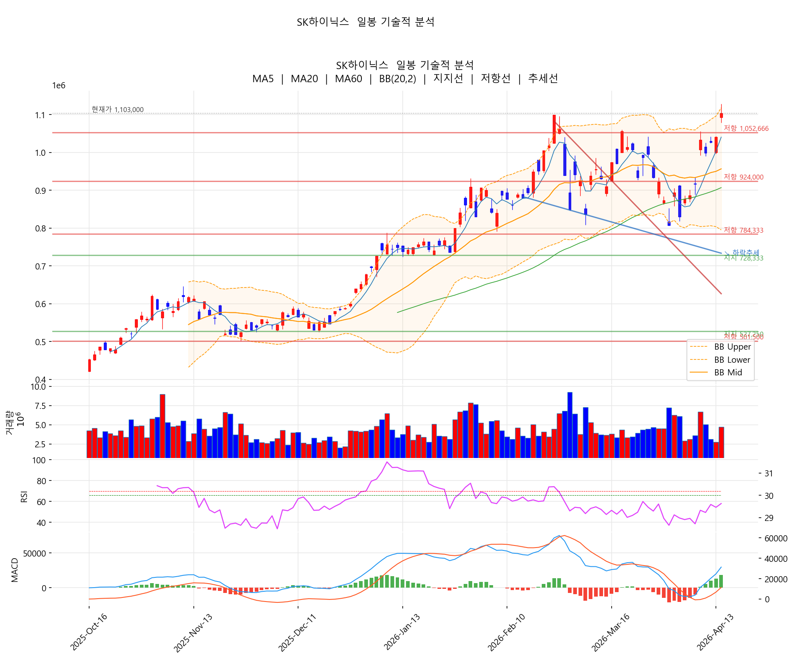
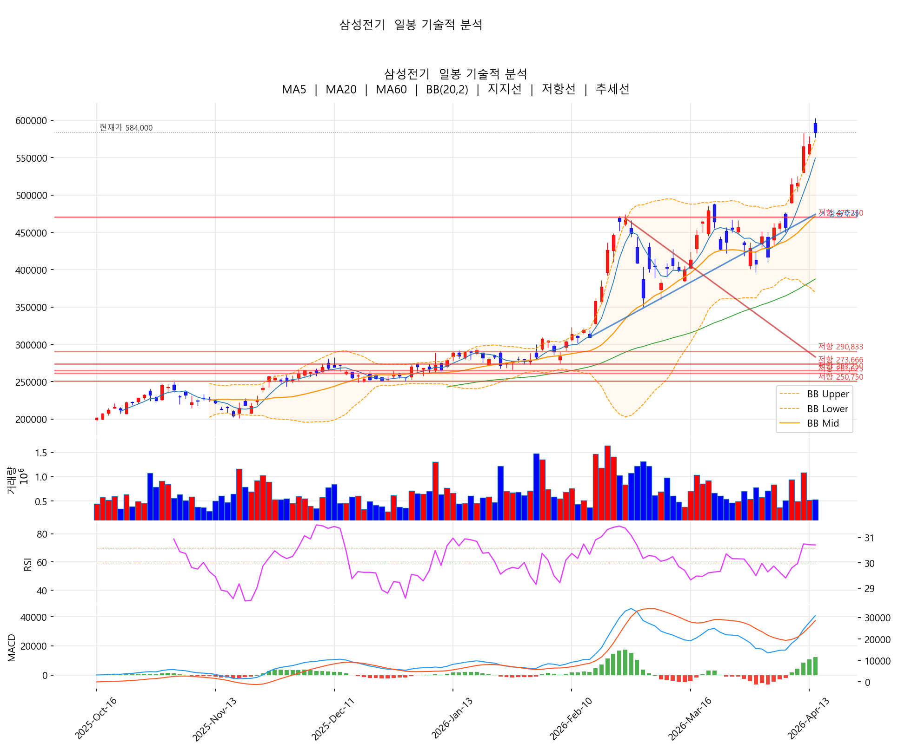
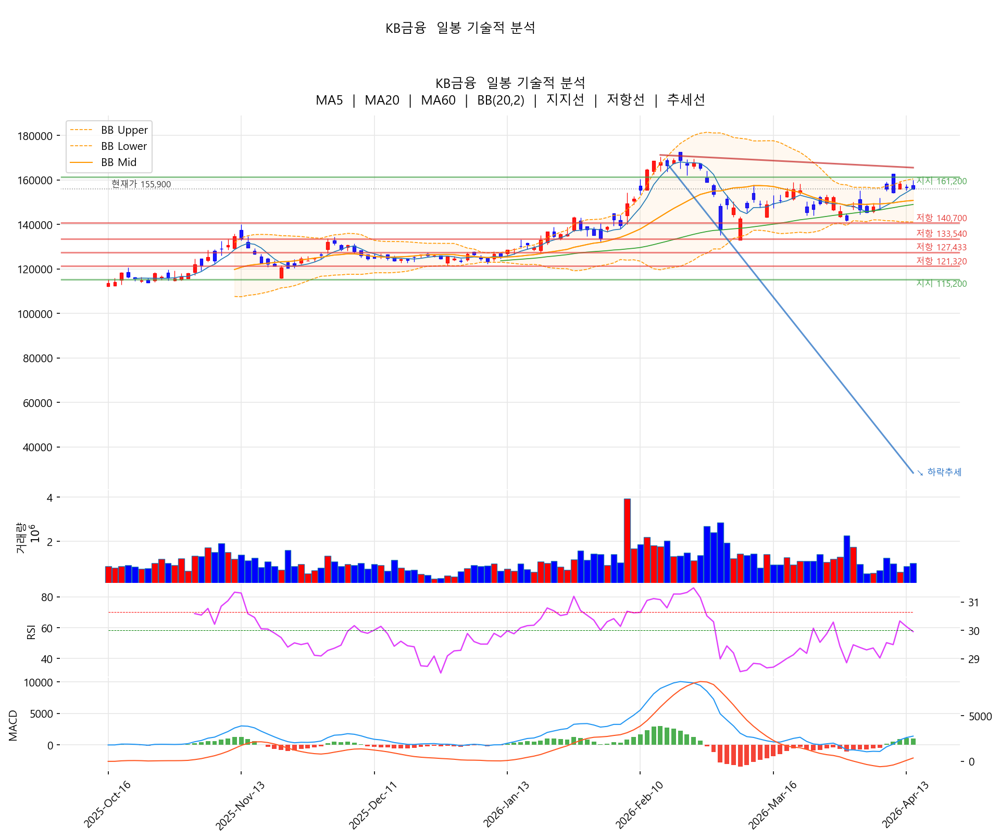
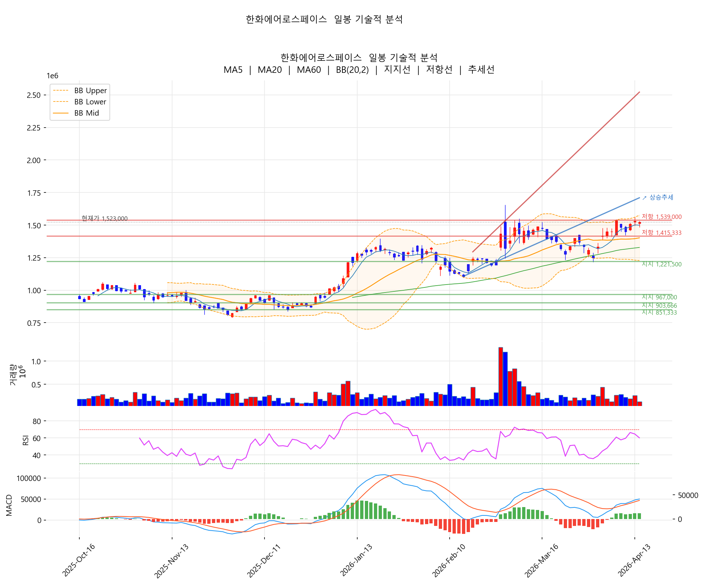
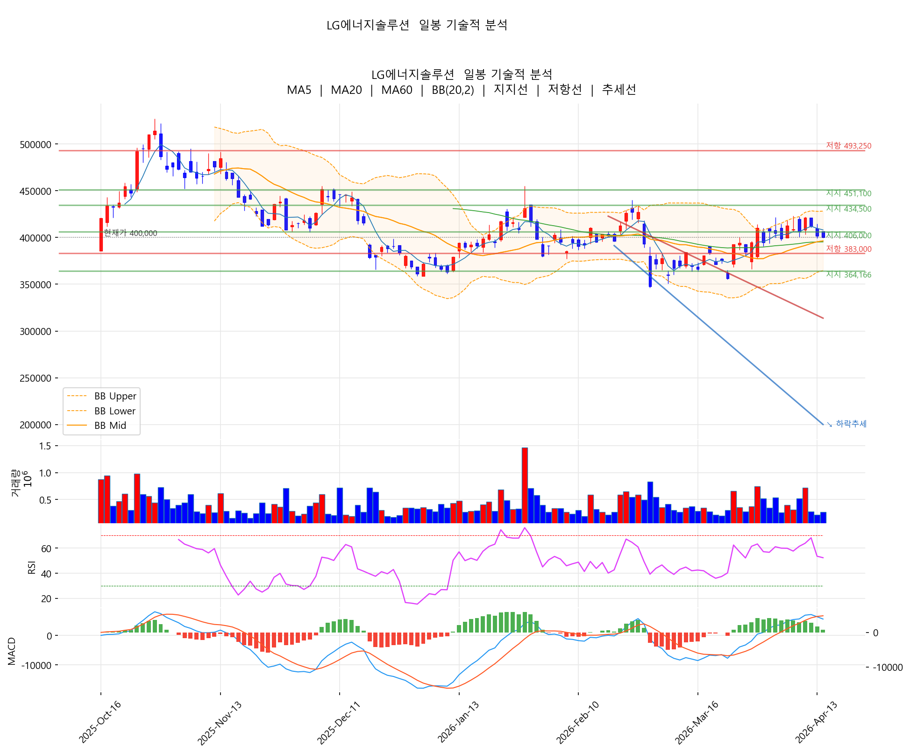

미·이란 종전 협상 재개 기대감에 코스피가 +2.74% 급반등한 5,967.75로 마감, 장중 '6,000피'를 일시 회복하기도 했습니다. 외국인이 1조 원 순매수로 지수를 끌어올렸고, SK하이닉스가 +6.06%로 선봉에 서며 반도체 랠리가 재개됐습니다. 30종목 중 20종목 상승.
① 지수: 코스피 5,967.75 (+2.74%) — 장중 6,000선 일시 회복
② 드라이버: 미·이란 종전 협상 재개 기대감
③ 외국인: 1조 순매수로 반도체·광통신·건설 매수
④ 환율: 원·달러 1,480원대 — 이틀째 하락, 위험선호 회복
⑤ 대외 변수: 뉴욕증시 상승, 나스닥 +1.2%
주요 헤드라인 (4/14 KST)
• 코스피 美·이란 협상 재개에 2.74% 상승…6,000선 바짝 — 연합인포맥스
• 코스피, 2.74% 상승한 5967.75 마감...우주항공·증권 강세 — 글로벌이코노믹
• 외국인 1조 순매수! 반도체·광통신·건설이 이끈 코스피 — 네이버 프리미엄콘텐츠
• 위험 선호 심리 회복·유가 하락…달러·원 환율 1480원대 마감 — 뉴스1
• 다시 힘받는 낙관론에 뉴욕증시 상승 마감…나스닥 1.2%↑ — 연합뉴스
오늘 시장의 본질: 어제(4/13)의 관망세를 협상 재개 기대감이 단숨에 돌파했습니다. 외국인 매수 + 유가 하락 + 위험선호 회복의 3박자가 맞물리며 대형주 전방위 반등. 특히 어제 가장 크게 빠졌던 대형주들(삼성전자·LG전자·한국전력)이 오늘 상승을 주도하며 어제 낙폭을 대부분 만회했습니다.
| # | 종목 | 종가 | 등락률 | 5일 | 20일 |
|---|---|---|---|---|---|
| 1 | SK하이닉스 | 1,103,000 | +6.06% | +20.41% | +13.71% |
| 2 | 한국전력 | 44,350 | +5.09% | +11.15% | -7.99% |
| 3 | 삼성생명 | 246,000 | +4.68% | +10.81% | +13.36% |
| 4 | LG전자 | 120,000 | +4.08% | +12.04% | +4.80% |
| 5 | SK | 361,500 | +3.43% | +15.68% | +6.32% |
| 6 | SK텔레콤 | 95,500 | +3.24% | +17.03% | +19.82% |
| 7 | 삼성전기 | 584,000 | +2.82% | +27.79% | +30.80% |
| 8 | 삼성전자 | 206,500 | +2.74% | +5.09% | +6.50% |
| 9 | 현대차 | 491,500 | +2.72% | +3.91% | -5.84% |
| 10 | 한미반도체 | 284,000 | +2.71% | +12.03% | -5.65% |
| 종목 | 종가 | 등락률 | 비고 |
|---|---|---|---|
| 삼성바이오로직스 | 1,536,000 | -0.90% | 차익 실현 |
| 고려아연 | 1,649,000 | -0.84% | 어제 +5.19% 되돌림 |
| HMM | 21,000 | -0.71% | 해운 약세 |
| 포스코퓨처엠 | 213,000 | -0.70% | 2차전지 소재 |
| 에코프로비엠 | 197,800 | -0.60% | 2차전지 |
| 한화에어로스페이스 | 1,523,000 | -0.46% | 어제 신고가 되돌림 |
| KB금융 | 155,900 | -0.45% | 금융주 혼조 |
| LG에너지솔루션 | 400,000 | -0.37% | 2차전지 약세 |
| 알테오젠 | 353,000 | -0.14% | 바이오 |
| 순위 | 섹터 | 오늘 | 5일 | 20일 | 주요 종목 |
|---|---|---|---|---|---|
| 1 | 반도체장비 | +2.71% | +12.03% | -5.65% | 한미반도체 +2.71% |
| 2 | 가전·전자 | +4.08% | +12.04% | +4.80% | LG전자 +4.08% |
| 3 | 통신 | +3.29% | +13.33% | +19.37% | SKT +3.24% / KT +3.33% |
| 4 | 유틸리티 | +5.09% | +11.15% | -7.99% | 한국전력 +5.09% |
| 5 | 반도체 | +3.48% | +11.25% | +8.09% | SK하이닉스 +6.06% / 삼성전자 +2.74% |
| 6 | 지주사 | +3.43% | +15.68% | +6.32% | SK +3.43% |
| 7 | 금융 | +1.40% | +7.20% | +8.98% | 삼성생명 +4.68% / KB -0.45% |
| 8 | AI부품·MLCC | +2.82% | +27.79% | +30.80% | 삼성전기 +2.82% |
| 9 | 자동차 | +2.00% | +2.18% | -6.51% | 현대차 +2.72% / 기아 +1.29% |
| 10 | 인터넷·플랫폼 | +1.05% | +3.89% | -7.24% | NAVER / 카카오 |
| 11 | IT서비스 | +0.88% | -1.57% | -5.36% | 삼성SDS +0.88% |
| 12 | 철강 | +0.69% | +3.86% | +8.70% | POSCO홀딩스 +0.69% |
| 13 | 바이오 | -0.39% | -0.68% | -1.36% | 삼성바이오 -0.90% |
| 14 | LG에너지솔루션 | -0.37% | -3.03% | +9.30% | LG엔솔 -0.37% |
| 15 | 방산 | -0.46% | +5.03% | +3.18% | 한화에어로 -0.46% |
| 16 | 2차전지소재 | -0.70% | +0.95% | +11.40% | 포스코퓨처엠 -0.70% |
| 17 | 해운 | -0.71% | +4.48% | +0.24% | HMM -0.71% |
| 18 | 비철금속 | -0.84% | +11.34% | +3.07% | 고려아연 -0.84% (어제 +5.19%) |
| 19 | 2차전지 | -0.60% | -1.20% | +4.75% | 에코프로비엠 -0.60% |
반도체 (+3.48%) · SK하이닉스 HBM 장기 계약 이슈
AI부품·MLCC (+2.82%) · 삼성전기 베트남 대규모 투자
가전·전자 (+4.08%) · LG전자 AI 스마트글래스 이슈
유틸리티 (+5.09%) · 한국전력 요금 개편안
통신 (+3.29%) · AI 인프라 테마
금융 (+1.40%) · 삼성생명이 선봉
지주사 (+3.43%) · SK 그룹 AI 모멘텀
비철금속 (-0.84%) · 고려아연. 어제 +5.19% 급등 후 자연스러운 차익 실현. 5일 +11.34%로 추세는 여전히 유효.
방산 (-0.46%) · 한화에어로스페이스. 어제 20일 신고가 경신 후 가벼운 조정. 다만 미·이란 협상이 실제 타결되면 방산 모멘텀은 약화될 수 있는 섹터.
2차전지 (-0.60%) · 여전히 소외
바이오 (-0.39%) · 동반 약세
어제 약세 → 오늘 강세의 거울상 반전이 뚜렷합니다. 미·이란 종전 협상 재개 기대감이 외국인 1조 매수로 이어졌고, SK하이닉스(+6.06%)가 HBM 장기 계약 기대감과 함께 선봉에 섰습니다. 어제 약세를 주도했던 반도체·가전·유틸리티가 오늘 일제히 반등했고, 반대로 어제 강세였던 고려아연·한화에어로는 가벼운 되돌림. 2차전지·바이오만 이 랠리에서 소외됐습니다.

차트 해석: 종가 1,103,000원으로 60일 신고가(1,099,000원)를 돌파. RSI는 57.9로 여전히 중립 구간이라 단기 과열 신호 없음. 볼린저 상단에 거의 밀착(95.4%) 상태. 거래량 배수 1.06x로 매수세가 붙어있는 건강한 상승. HBM 5년 장기 계약 기대감이 종가 신고가 돌파의 배경.
📍 핵심 가격대: 지지 1,040K(전일 종가) → 1,003K(MA5). 저항 1,150K(심리 저항) → 1,200K.

차트 해석: 종가 584,000원으로 20일 고점(583,000원) 돌파. 베트남 MLCC 기판 라인 신설 발표가 추세 유지 동력. 다만 RSI 72.1로 여전히 과매수, 볼린저 상단 돌파 상태 유지 중 — 단기 과열은 해소되지 않은 구간이라 추격보다 눌림목 접근이 안전.
📍 핵심 가격대: 지지 568K(전일 종가) → 524K(MA5). 저항 600K(심리 저항).

차트 해석: 시장 랠리 속에서도 -0.45% 약보합. 금융주는 단기 쉬어가는 구간으로 해석. MA5와 MA20이 좁게 수렴해 있어 방향성 결정 직전 구간. 삼성생명(+4.68%)이 금융 섹터 내 주도권을 가져간 하루.
📍 핵심 가격대: 지지 154K(MA5) → 151K(MA20). 저항 159K(BB 상단) → 162K.

차트 해석: 어제 20일 신고가(1,559K) 경신 후 -0.46% 가벼운 되돌림. 추세는 여전히 상방이지만 미·이란 협상이 실제 타결되면 방산 섹터 모멘텀 약화 리스크가 있는 점이 고민거리. RSI 60대 중립, 거래량 0.59x로 적극적인 매도는 아님.
📍 핵심 가격대: 지지 1,502K(MA5) → 1,396K(MA20). 저항 1,560K(20일 고점) → 1,655K(60일 고점).

차트 해석: 시장이 +2.74% 급반등하는 날에 -0.37% 약보합으로 마감 — 2차전지 섹터가 이번 랠리에서 소외됐다는 신호. 5일 -3.03%로 누적도 약세. 40만 원이 심리적 지지선 역할. RSI 52대 중립이라 추가 하락 여지는 남아있음.
📍 핵심 가격대: 지지 400K(심리) → 395K(MA20·MA60 클러스터) → 364K(BB 하단). 저항 410K(MA5) → 428K(BB 상단).
| 분할 진입 | 1,060,000~1,080,000원 (눌림목) |
| 1차 목표 | 1,150,000원 |
| 2차 목표 | 1,200,000원 |
| 손절 | 1,000,000원 (심리 지지) |
| 분할 진입 | 540,000~560,000원 |
| 1차 목표 | 600,000원 |
| 2차 목표 | 650,000원 |
| 손절 | 520,000원 (MA5) |
| 분할 진입 | 200,000~205,000원 |
| 1차 목표 | 215,000원 |
| 손절 | 195,000원 |
| 관망 후 진입 | 1,500,000원 지지 확인 시 |
| 1차 목표 | 1,655,000원 (60일 고점) |
| 손절 | 1,395,000원 (MA20) |
| 재진입 검토 | 395,000원 지지 확인 시 |
| 1차 목표 | 428,000원 (BB 상단) |
| 손절 | 363,000원 (BB 하단) |
오늘의 드라이버: 미·이란 협상 재개 + 외국인 1조 매수 + 유가 하락
강세 섹터: 반도체(SK하이닉스 HBM) > 유틸리티(한전 요금개편) > 가전(LG AI글래스) > 통신(AI 인프라)
약세 섹터: 2차전지(소외) > 바이오 > 비철금속(어제 급등 되돌림)
관심 종목: SK하이닉스(신고가), 삼성전자(외국인 매수), 삼성전기(추세 유효)